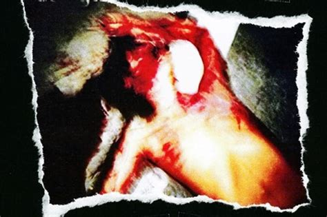

Krahang (Thai: กระหัง, pronounced [krā.hǎŋ]; or กระหาง, [krā.hǎːŋ]) is a male spirit of the Thai folklore. It manifests itself as a shirtless man, wearing a traditional loincloth, who flies in the night. Krahang uses two large kradong (กระด้ง), round rice winnowing baskets, to fly in the night in rural areas of Thailand. It also often rides a sak tam khao (สากตำข้าว), the long wooden pestle of a traditional manual rice pounder. Krahang is a type of nocturnal ghost that is said to haunt the same areas as Krasue, a female spirit of the Thai village folklore, thus these two spirits are often mentioned or represented together. Legends of the Thai oral tradition say that this is an evil spirit that may harm people walking at night in out of the way areas. Like Krasue it lives the life of a normal villager during the day.
But from the research in "Three Seals Law" (กฎหมายตราสามดวง) from Ayutthaya period. Rongroj Piromanukul, an anthropologist of Ramkhamhaeng University found that the Krahang don't appear in the list of ghosts, so they believe that the names are recorded later. In August 2012 villagers at Lat Bua Khao, Sikhio District, in the western part of Nakhon Ratchasima Province, blamed Krahang for some nightly attacks on local women.[9] [10]But finally caught up. As a matter of fact, it is only a man who is drug addicted.[11] In July 2017, an 18-year-old girl at Nong Plong, Chamni District, Buriram Province, claimed that while she was in the restroom within her house at night before going to bed, she saw a Krahang through a gap near the ceiling. It appeared as a large man with a winged back. The girl panicked and ran out of the restroom, and when this story spread as a result, the villagers of the two villages were terrified.One elder villager said she saw the krahang for ten years. It flies in pairs with glowing eyes like a thunderbolt, she said she saw it last Sunday at the beginning of the year at 02:00 am for a half hour. The woman reportedly tried to get her son to film the creature with his cell phone without success. The village elder blamed a nearby house in which her family had previously lived, but is now abandoned. In 2010, her old sister and her mother died in this house. She then saw strange lights floating out of the house at night - she believed these to be Krasue and Krahang. She claimed to be fighting it in her dream for more than ten years before she actually saw it in early 2012. The elder hired a sorcerer to hold exorcisms at this house, spending over a hundred thousand baht without success. Modern adaptations Krahang is a popular folk spirit that has been featured in the 1991 Thai film Kahang (กะหัง) and film Krahang (กระหัง), and was adapted as a funny character in Thep Sarm Rudoo (เทพสามฤดู) a folk-style television series that was made in 1987, 2003 and 2017, as well as in a Sylvania light bulb commercial for Thai audiences.